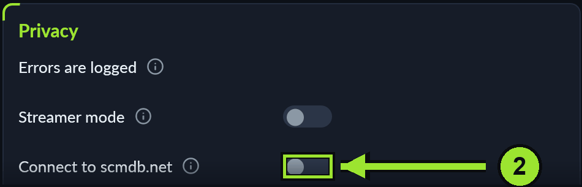
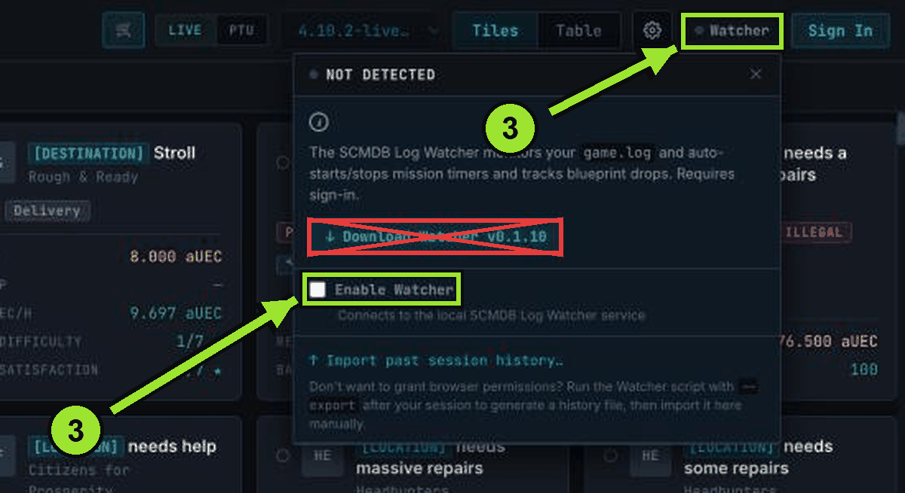
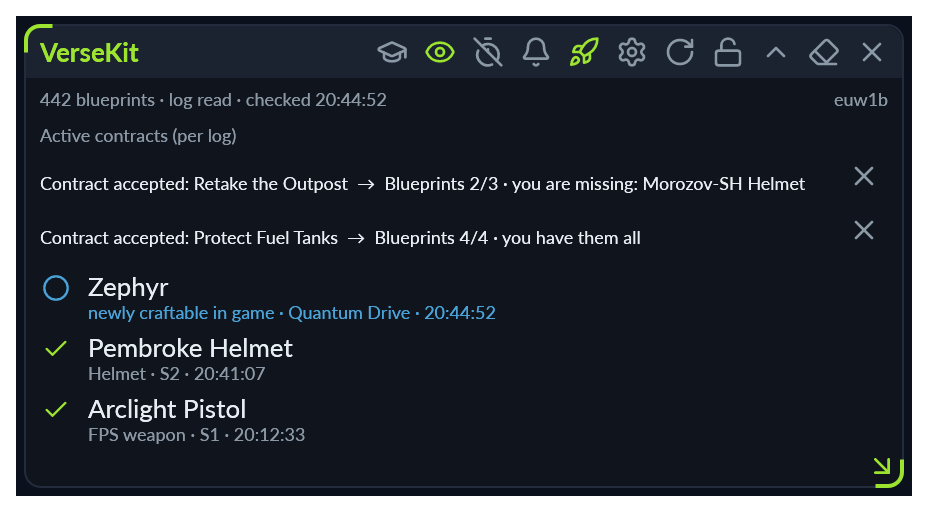

- VerseKit
- FAQ
Frequently asked questions about VerseKit
First the questions almost everyone asks, then help when something does not work.
Setting up and connecting
How do I connect VerseKit to scmdb.net?
- If scmdb's own watcher is running, close it. Both at once do not work, VerseKit takes over its job.
- In VerseKit, turn on “Connect to scmdb.net” under Settings → General → Privacy. The overlay has to be running.

- Sign in on scmdb.net with your account and choose “Watcher” → “Enable Watcher” at the top right.

- Your browser asks once whether the site may access apps on this device: allow it, let it remember and reload the page.
- Keep the page open while you play. VerseKit then reports new blueprints and contracts to your scmdb account.
You do not need to download scmdb's own watcher. It works with LIVE and HOTFIX, not with PTU. If VerseKit says “Port in use”, scmdb's watcher is still running: close it and switch the setting off and on once.
The Watcher on scmdb.net does not turn green
Go through these in order, the first or second one usually solves it:
- In VerseKit, the switch “Connect to scmdb.net” under Settings → General → Privacy is on. If it says “Port in use”, scmdb's old watcher is still running, also in the notification area next to the clock. Close it and switch the setting off and on again.
- The VerseKit overlay has to be running.
- Quick test: open http://127.0.0.1:23456/ping in the same browser. If a line of text appears, VerseKit is ready.
- Reload the scmdb page and allow the browser's question whether the site may access apps on this device. If you declined it earlier, click the lock icon left of the address and allow the permission there.
- Turn off ad blockers and Brave's Shields for scmdb.net as a test.
Windows warns when I start it. Is that normal?
Yes. VerseKit is not digitally signed (yet), so Windows shows “Windows protected your PC”. Click “More info”, then “Run anyway”. The code is public on GitHub, and GitHub builds the files from it itself.
What do the overlay icons mean?
Point at an icon and wait a moment: a short hint appears next to it, saying what it is and what a click does. That does not work while the overlay is click-through (lock closed): then every click goes to the game. The lock makes it usable again.

- Graduation cap: teach a signature. It shows the last scan picture, you type the number, and the signature scanner knows it afterwards. Only there while the scanner runs.
- Eye: the signature scanner. Grey and crossed out means off, yellow means on but not reading, green means it is reading. A click switches it on and off.
- Stopwatch: anti-AFK. After the waiting time it presses the key for “wipe visor”, as long as the game is in front and you press nothing. Green means it is waiting, yellow that it has just pressed, red that it cannot press or was stopped. Crossed out means off. A click switches it.
- Bell: a click opens “Update & About” in the main window, with the history of versions. When the bell is green, a newer version is out.
- Rocket: starts the RSI Launcher. Only there when VerseKit has found it.
- Gear: opens VerseKit's main window.
- Circular arrow: rereads the logs if a blueprint is missing.
- Lock: switches click-through on and off. Closed, every click goes to the game.
- Arrow up or down: folds the overlay to its bar and opens it again. That frees your view.
- Eraser: clears the messages shown. Your blueprints stay.
- Cross at the far right: quits VerseKit.
- Three dots: when the overlay gets narrow, the icons on their left move behind these dots.
Rows below carry an icon too: the green tick means the blueprint is unlocked in the game. The blue circle means it is newly craftable in the game, the gold star that a blueprint from your watchlist is craftable now, and the grey “i” is a note from VerseKit. The cross behind a running contract hides it, the arrow in the free corner resizes the window. A single eye is the strip in which the overlay waits: point at it and it comes.
Which keyboard shortcuts work in game?
Alt+Shift+V opens and folds the overlay. On Windows, Alt+Shift+R reads the refinery terminal and then opens the storage with the lines it read, and Alt+Shift+B takes the game picture for the signature window at once. Alt+Shift+H puts you into the handle search field of the info bar, Alt+Shift+F brings the main window to the front. All five can be changed or switched off under Settings → Overlay. A single key such as F13 works instead of a combination too.
Where is my data, and how do I back it up?
You can see and change the folder under Settings → Installation & paths (“Folder for your data”). A backup to take along is under Settings → Backup & reset.
How do I connect the KRT Profit Basetool?
Under Settings → Connection & sync, turn on the areas you want (blueprints, storage, hangar, demand, unit storage) and click “Connect”. In the browser you type in a code and sign in with your Basetool account. The “Unit demand” and “Unit storage” pages only appear with this connection.
When something does not work
Install, start, update
My antivirus flags VerseKit
A false alarm: programs packed into a single file like VerseKit are often flagged by mistake. The checksum shows whether your file is genuine: every version on GitHub comes with SHA256SUMS.txt, and the value there must match your file (on Windows: certutil -hashfile VerseKit-Setup.exe SHA256). If it matches, allow the file in your antivirus.
The update fails and the version stays old
Download the latest version on the “Download” page and install it over the old one. Your data is kept. If the version still stays old, you are probably starting an old single .exe instead of the installation: start VerseKit from the Start menu.
I only start VerseKit together with the game, and it never updates
While Star Citizen runs, VerseKit installs no update. From version 5.3 on, VerseKit installs a waiting update on Windows as soon as you quit VerseKit and the game is closed. If an update has waited a day or longer, the overlay and the main window show it, with the button “Update now”. If you have an older version, start VerseKit once without the game, and it fetches the update.
I start VerseKit and see nothing, only the icon next to the clock
VerseKit is running, it is only waiting for the game. From version 5.3 on, the main window opens as soon as you start VerseKit yourself. If that is off, or you have an older version, open it with Alt + Shift + F, with “Open VerseKit” on the icon next to the clock, or by starting VerseKit once more. Without Star Citizen running, the overlay only shows when “Show without the game running too” is on under Settings → Overlay. You turn the main window at start on or off under Settings → General → “Open main window on start”.
Linux: the launch button does not start Star Citizen
On its own the button only finds the LUG Helper start script. If you play through Lutris, Heroic or Flatpak, enter your own command under Settings → Installation & paths → “Launch command for Star Citizen”.
In the game
My blueprint details have disappeared in the game
Every game patch and every translation update rewrites the game's text file, which drops the details. After a patch VerseKit inserts them again by itself; by hand it is under Game settings → Game → “Insert again”. Then quit Star Citizen completely and start it again, because the game only reads the file at startup. If a second translation tool runs alongside, the two overwrite each other: use only one.
The signature scanner shows nothing while mining
Look at the eye in the overlay bar. Grey means off: click it. Yellow means on but not reading: restart VerseKit once. Green means it is reading. If a number is not recognised, teach it under Mining & Salvage → Mining → “Teach digits”. The scanner is Windows only.
I scanned the refinery. Where do I find it?
The scan only reads, it does not add anything yet. The lines it read are then in VerseKit under My Inventory → “Enter refinery yield”. Compare them with the terminal and press “Add … entries”, only then do they land in your inventory. The running order with its remaining time shows in the overlay and in the Refinery tile on the overview. If the scan reads nothing or something wrong, send a report with the picture via “Report a problem”.
Your data
The blueprint list is missing blueprints I own
VerseKit counts what appeared in Star Citizen's logs since setup; the game deletes older logs itself. Compare once with the fabricator in the game and tick off what is missing in the blueprint list. If your inventory is already in the Basetool, on scmdb or in a file, bring it in under Settings → Backup & reset → “Import inventory”.
VerseKit remembers nothing, the statistics stay at 0
Usually the folder for your data is in OneDrive or somewhere VerseKit may not write to. Under Settings → Installation & paths → “Folder for your data”, choose a folder outside OneDrive, for example on D:.
Display
The text is blurry (4K or scaling above 100 %)
VerseKit draws at the full resolution of your screen out of the box, there is no switch for it. If the text is too small or too large for you, set it under Settings → Appearance → “Interface size”.
What belongs in an error report
If none of this helps, click “Report a problem” at the bottom right in VerseKit. The report goes straight to the developer, with personal folder names removed first. If VerseKit crashed, it says so once at the next start. “View report” opens “Report a problem”, and nothing is sent unless you want it.
- Version, system and the latest errors: the report adds them itself, nothing to copy.
- What you did, briefly and in order: which tab, which button.
- What should have happened and what happened instead.
- A picture of it. You can attach up to four to the report.
- If it concerns the game: whether LIVE or PTU.
If VerseKit does not start at all, ask on Discord and send the error message as a picture, plus Windows or Linux and which version you downloaded.